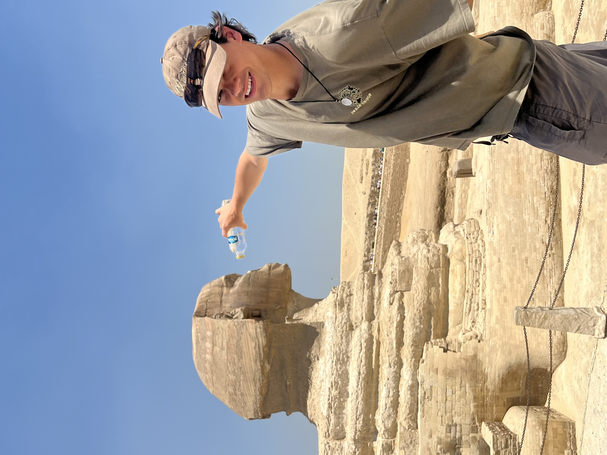

The big guy looked kind of dry
My name is Victor Singh. I am currently a Cognitive Science and Economics student at the University of Toronto, entering my 4th year.
My academic interests sit across econometrics, causal inference, cognitive science, and the brain + the body — all different lenses that contribute to the same problem of separating real signal from noise in the complex problem of decision making.
Outside of research
Amongst my research interests, I have a variety of hobbies and interests that I pursue in my free time. For academic hobbies, I enjoy playing bridge, chess, and reading Sci-Fi and Philosophy books centered around the nature of consciousness and the mind. For my creative interests, I love listening to music, going to live shows, and playing guitar. For physical activities, I backcountry backpack, fish, and hike. All in my quest to become the embodiment of a Renaissance man... it's also possible I have too much time on my hands.